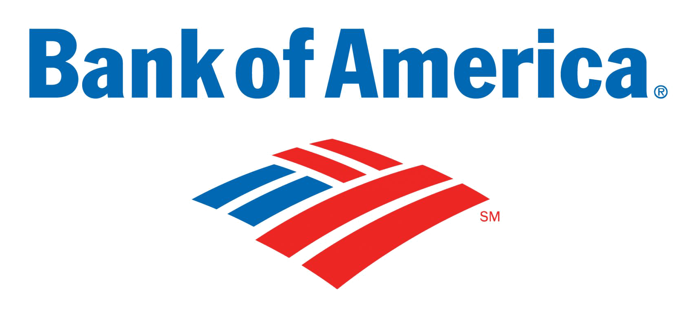
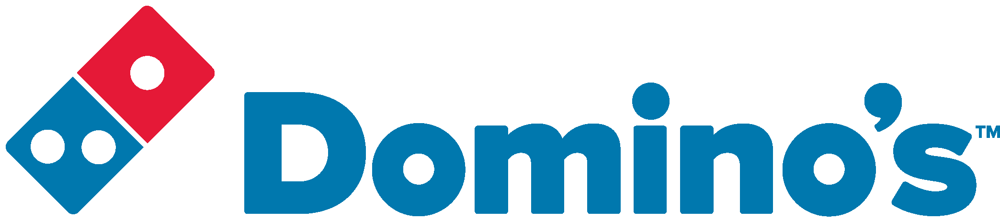

Work Experience
Murray, Utah
(7 mo) October 2018 ― Present
Senior UI Developer
Senior React UI developer building an online-banking responsive web experience.
- Used advanced React to rapidly build online-banking forms according to high-fidelity visual designs, using best practices.
- Built a form framework from scratch, including validation handling.
- Built a test harness, a complete mock environment, and several test scaffolding tools to write and maintain React component tests.
Remote
(4 mo) August 2018 ― December 2018
Senior UI Developer
Chief architect and developer of rapidly developed MVP of Binary Tree's Innovation Lab's flagship Cost Governance product.
- Within first two weeks of work: scaffolded React app using create-react-app, ejected, customized webpack configs, DRY'ing up similarities using webpack-merge, implemented react-router, implemented Redux state management, and built custom Form implementation to rapidly flesh out 7 forms for first demo.
- Swapped custom form implementation for robust solution using several different libraries, including Formik.
- Built highly complex custom components as part of "dashboard-style" SPA, using JavaScript and React best-practices.
- Worked with fully remote team, using Skype for Business as the primary method of communication.
 Lindon, Utah
(3 mo) August 2018 ― November 2018
Full-stack Engineer
Lindon, Utah
(3 mo) August 2018 ― November 2018
Full-stack Engineer
Chief UI/UX designer, architect, and lead engineer of Angular GUI to manage server nodes in clusters via a REST interface implemented in Node.js. Drastically changed gears to scrap Angular app in favor of advanced D3 visualization to provide a convenient and scalable way of visually monitoring large clusters of servers.
- Rapidly brought myself up to speed to become proficient in the following new technologies for me: Angular, Typescript, angular-cli, angular-material, RxJs, Axure, D3, Ansible, Grafana
- Created interaction prototype to rapidly test UX ideas using Axure.
- Designed Angular app structure in generic, composable, and reusable way.
- Wrote Node script to translate JSON representation of module/component tree into a newly scaffolded application tree, using angular-cli as a back-end.
- Built login page and implemented complex routing scheme, using lazy-loaded modules and an AuthGuard.
- Ramped up on Ansible and prepared presentation comparing the pros and cons of Ansible's AWX and a roll-my-own solution
- Built complex D3 visualization from scratch, incorporating zooming and panning and HTML overlays, and then turned visualization into Grafana plugin.

Charlotte, North Carolina
(2 yrs 6 mo) March 2016 ― August 2018
UI Lead
Senior full-stack engineer on a home-grown build platform and UI framework based on Node.js called SPARTA. Successfully navigated several teams and became liaison between Payments/Transfers and the platform team. As lead, studied complex wireframes and ensured successful design, build, and release of several projects, including Zelle enrollment and the "add an alias" functionality to enable Email/Mobile Transfers. Managed several team members as direct-reports, as well as stayed ahead of technological trends and brought their implementation into harmony within an environment focused on stability and security.
- Built CLI tools using Node.js and BASH scripts to automate and streamline common tasks during development across the organization, eliminating pain points for 40-50 developers.
-
- Built a component micro-library borrowing from React and Angular, under deadline pressure, and successfully used it to build new Zelle "simplified enrollment" project, comprised of complex client-server-user interactions.
- Built a Web-UI and mock REST API server for Erica, consuming the JSON responses meant for Native app development as a POC.
- "Climbed the corporate ladder", eventually gaining 5 direct-reports, and many responsibilities including code quality management; mentoring; interviewing; onboarding
 Ann Arbor, Michigan
(1 yr 5 mo) September 2014 ― March 2016
UI Lead
Internationalized dominos.com by: enabling it to render RTL languages (Arabic) through the use of CSS; enabling use of different digital payment vendors by building a "payment gateway" using inversion of control to isolate the differences between implementations into configuration objects; building a "store-locator" using the Google Maps API and a "drop-a-pin" feature; and leading the effort to produce versions of the site for the Dominican Republic, Jamaica, Bahamas, Colombia, South Africa, Saudi Arabia, Egypt, Qatar, and Italy.
- Almost single-handedly implemented the internationalization of the Dominos.com responsive web eCommerce platform.
- Led team of 3 developers in construction of Dominos.com sites for Jamaica, Bahamas, Columbia, Dominican Republic, Saint Martin, Saudi Arabia, Egypt, Lebanon, Qatar, South Africa, and Italy.
- Built internal tool using Backbone.js to provide a portal for international franchisees to streamline the updating of webapp assets to shift the responsibility from the developers to franchise owners.
- Helped to build a platform using Node.js and Grunt to create production builds and run unit tests of web application.
- Wrote scripts using Node.js to automate large and complex refactoring of JSON files.
- Wrote a Node.js script to convert all characters on the site into Chinese characters as a POC.
- Led effort to “fix” global site in one two-week sprint, after merge of US code with international code into a unified code-base.
January 2012 ― January 2013
Homeschooled English and Mathematics in France, learned French, and spent time with my dad, uncles’ families and grandparents in France. Completed Associate of Science in Mathematics from Northern Virginia Community College and George Mason University.
Impact Applications, LLC
Marietta, Georgia
(2 yr 4 mo) January 2011 ― December 2011 / January 2013 ― June 2014
Web Developer / Server admin
Worked remotely building and maintaining various pages, websites, and applications for small businesses.
- Built restaurant ticketing application using Angular.js
- Built portfolio hub show-casing different websites using jQuery animations and iFrames
The Empowerment Network (TEN)
Bethesda, Maryland
(2 mo) August 1996 ― September 1996
Website Developer
During the summer, was hired by the non-profit company my mom worked for to build their first online presence - for which I was paid $350.
- Hand-coded The Empowerment Network’s first Website using Microsoft Notepad and Internet Explorer.
- Used only HTML.
- Used tables and frames to achieve a navbar and a 2-column layout.
- Used HTML attributes to achieve all styling.